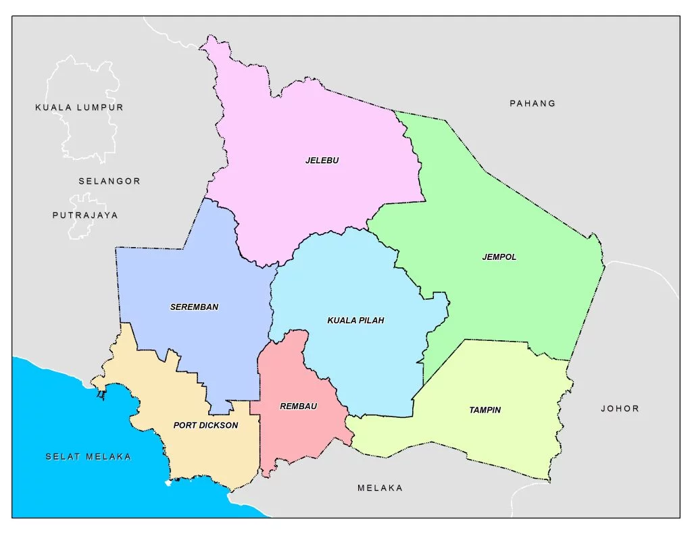

Hello! My name is
'Ainul Wafa Binti Ismail Nasaruddin or
better known as
fafa. I was born on 28
th January 2004 at Hospital Tuanku Jaafar,
Seremban, Negeri Sembilan. My hobby is reading novels, my favorite novel is
Sanggupkah Bersabar Sayang ? by Rehan Makhtar.
I am the
youngest of 3 brave siblings. I have one brother and one sister. My mother name is Wizana Binti Ramli, she is a
supermom,
she work and also taking care of her children very well. I also love to go to beach. I love nature its make me feel calm whenever I watch them, like the cloud, sky
tree and others. The most interesting part is that, I really love Spider-man !!!
Spider-Man is a superhero in American comic books published by Marvel Comics. Created
by writer-editor Stan Lee and artist Steve Ditko, he first appeared in the anthology comic book Amazing Fantasy #15 (August 1962) in the Silver Age of Comic Books.

I started attending
Sekolah Sri Seremban when I was six years old. The school includes three levels which are the preschool, primary, and secondary. The secondary school's name is SMI Seri Setia Seremban.
I graduated from Form 5 in 2021, and I also took the SPM exam. Now, I am recently a diploma student in Information Management in UiTM Rembau and this semester is my last semester here.
I have always been interested in technology. I recently completed my industrial training at
Jabatan Hal Ehwal Agama Islam (JHEAINS),
where I worked in both the human resources and ICT units. When I was there, the staff were very kind and fun. They always treadted me kindly, sometimes gave a free food for me and the other practical intern there.